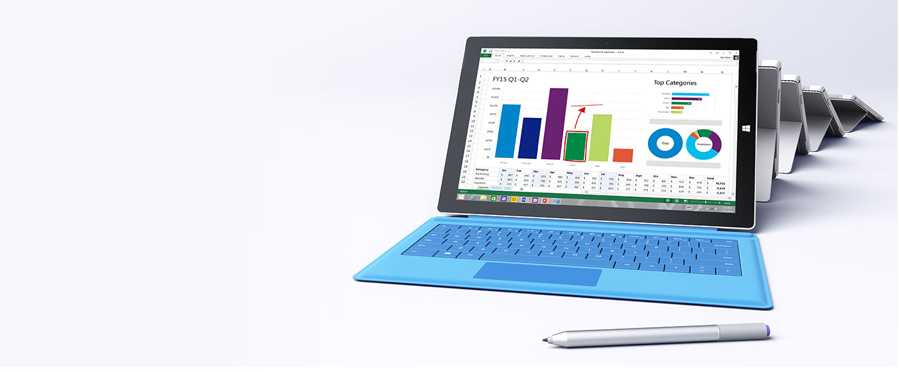
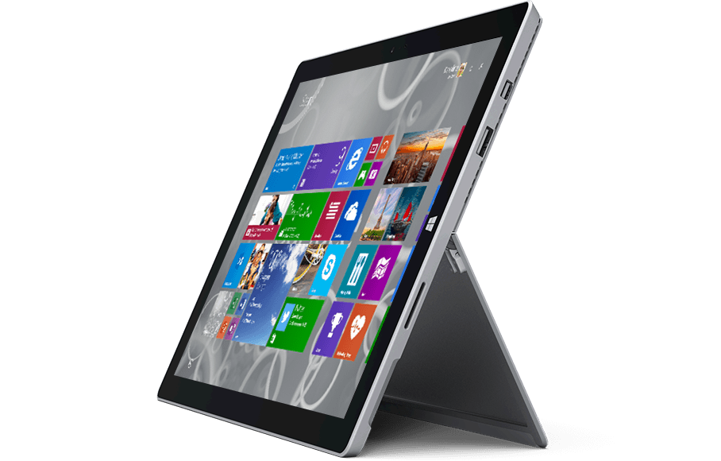

The tablet that can replace your laptop
The Surface Pro 3 is closer than Microsoft has ever been to making good on its mobile computing vision. After over a week with the slate, I'd go so far as to say that the Pro 3 is closer than any laptop-tablet hybrid released yet.
Microsoft was so sure of itself that not only did it directly compare the Pro 3 to Apple's iPad Air and 13-inch MacBook Air, it gave members of the press pre-release Surface Pro 3 units during an announcement event in New York. Sure, the units have bugs as of this review, but who cares?

"I forced the giving away of the device, just so you're aware," Surface team lead Panos Panay told me just after the reveal. "I said, 'You know what? I want the product in people's hands.' 'But the bugs are still there. They're not all done until June 20, until it's on market.' I don't care. The purity of the device is still true, and on June 20 there will be more drops."
Work AnyWhere:

Runs Windows, Office, desktop apps, and browsers
Surface Pro 3 comes with Windows 10, so you can use all your favorite touch apps and desktop software, like Office, and even ask Cortana† to remind you about important events.

It's also available in many more countries, including 25 new markets for the first time. According to Microsoft, the device has proved such a popular debutant in those markets that it's struggled to meet demand. "For those of you waiting for Surface Pro 3 (or for the specific version that is just right for you): hang tight, we are shipping in new products as fast as we can," Microsoft wrote in a blog post on September 12. "We should be in a much better position in the next week or two."